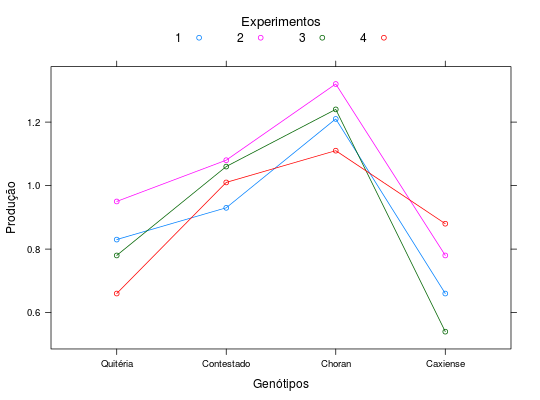

Resultados de um grupo de experimento de competiação de genótipos de alho. Os valores disponíveis são as médias dos genótipos em cada experimento.
Um data.frame com 16 observações e 3 variáveis, em que
genoexperprodBARROS; DIAS (2009), Exercício 8, Cap. 11, pág. 321.
library(lattice) data(DiasEx11.7.8)#> Warning: data set ‘DiasEx11.7.8’ not foundstr(DiasEx11.7.8)#> 'data.frame': 16 obs. of 3 variables: #> $ geno : Factor w/ 4 levels "Quitéria","Contestado",..: 1 1 1 1 2 2 2 2 3 3 ... #> $ exper: Factor w/ 4 levels "1","2","3","4": 1 2 3 4 1 2 3 4 1 2 ... #> $ prod : num 0.83 0.95 0.78 0.66 0.93 1.08 1.06 1.01 1.21 1.32 ...xtabs(~geno + exper, data = DiasEx11.7.8)#> exper #> geno 1 2 3 4 #> Quitéria 1 1 1 1 #> Contestado 1 1 1 1 #> Choran 1 1 1 1 #> Caxiense 1 1 1 1# Totais. with(DiasEx11.7.8, addmargins(tapply(prod, list(geno = geno, exper = exper), FUN = sum)))#> exper #> geno 1 2 3 4 Sum #> Quitéria 0.83 0.95 0.78 0.66 3.22 #> Contestado 0.93 1.08 1.06 1.01 4.08 #> Choran 1.21 1.32 1.24 1.11 4.88 #> Caxiense 0.66 0.78 0.54 0.88 2.86 #> Sum 3.63 4.13 3.62 3.66 15.04xyplot(prod ~ geno, groups = exper, data = DiasEx11.7.8, type = c("p", "a"), xlab = "Genótipos", ylab = "Produção", auto.key = list(title = "Experimentos", cex.title = 1.1, columns = 4))